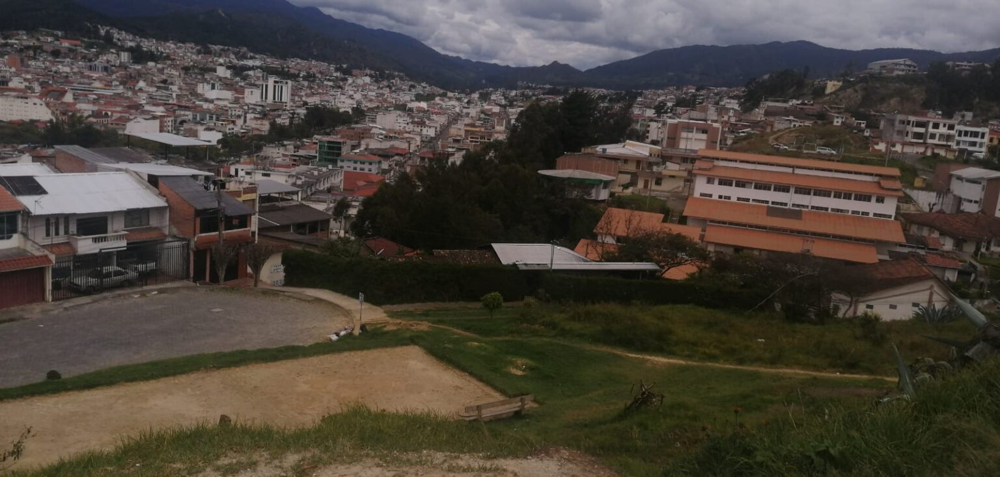

Noticias de Ecuador#
Dos noticias de actualidad de Ecuador extraidas de el diario “El Comercio”
Cinco razones por las que el Pico y placa no funciona todo el día en Quito#

La posibilidad de ampliar la restricción vehicular del Pico y placa a todo el día se baraja. El alcalde electo, Pabel Muñoz, dijo en una entrevista reciente que no descarta extender la medida.
Tres expertos en movilidad: Cristóbal Buendía, presidente del Observatorio de la Movilidad; Alfredo Viteri, experto en movilidad; y Álex Rivera, docente universitario, analizan la propuesta y explican por qué en una ciudad como Quito, la extensión de la medida restrictiva no es la mejor opción. Al menos no por el momento. Publicidad 1.-No hay calidad en el servicio de transporte en Quito
Para poder aumentar la restricción vehicular es necesario contar con un sistema de transporte eficiente y de calidad. Así, se le estará dando una alternativa de movilidad a la ciudadanía. Sin embargo, eso no ocurre en Quito.
El sistema de transporte no está preparado para soportar un incremento de usuarios, por lo que las personas que no podrán sacar sus autos, preferirán (como ocurre actualmente) tomar un taxi.
En ese sentido, los verdaderamente beneficiados de la medida serán quienes brindan ese servicio ya sea de manera regular o irregular. Incluso, dicen los expertos, podría motivar a que más personas opten por trabajar ilegalmente. 2.-La medida no forma parte de un plan de movilidad estructurado
El Hoy no circula (medida restrictiva que impide la movilización de un auto dependiendo del número de placa durante todo el día) se probó ya durante los primeros meses de la pandemia. Publicidad
Los expertos consideran que los leves beneficios que puede generar la medida si se la llega a aplicar, podría diluirse en el tiempo, ya que habrá familias que opten por comprarse un segundo auto para poder movilizarse.
En ese sentido, sería una medida contraria a lo que se debería hacer en torno a la movilidad sostenible. Y lo explican: lo que busca la ampliación del Pico y placa es disminuir el número de autos en las vías para reducir la congestión. Lo que terminará beneficiando a las personas que tienen vehículo que podrán llegar más rápido a sus destinos.
Pero una adecuada política de movilidad debe buscar en primer lugar potenciar el transporte público para que las personas voluntariamente prefieran movilizarse en bus o en tren o bicicleta porque resulta más cómodo y económico que sacar sus autos de casa.
Coinciden en que aumentar la restricción vehicular para solucionar el tráfico es como aumentar más huecos en el cinturón para una persona con problemas de obesidad. 3.-Las rutas y frecuencias no son las más adecuadas Publicidad
Para que el Metro de Quito pueda cambiar la movilidad de la ciudad, es necesario que esté acompañado de una restructuración de rutas y frecuencias que alimenten de pasajeros al sistema, y que permita que todos los sectores de la ciudad estén interconectados. Pero eso no ha ocurrido.
No hay servicio en toda la ciudad. Entre el 75% y el 80% de la capital tiene cobertura con el sistema de transporte público, el resto no cuenta con el servicio.
De manera que si se extiende la restricción vehicular, habrá personas que viven en zonas no servidas y que sin un auto para movilizarse, no podrán deslazarse. 4.-No se impulsa la movilidad alternativa
En Quito no hay una política que motive el uso de bicicletas, patinetas o escúteres. Tampoco una que promueva el uso de vehículos eléctricos para llegar a un sistema de trasporte cero emisiones.
El proyecto Bici Q no funcionó, las bicicletas quedaron embodegadas y otras se extraviaron.
Tampoco se ha trabajado en un adecuado trazo de la ciclovía ni en estacionamientos de bicicletas seguros que permita al ciclista movilizarse hasta una parada y combinar el uso de su bicicleta con el transporte público. Publicidad 5.-En Quito aún hay horas valle
La extensión del Pico y placa es una alternativa acertada para las ciudades que tienen congestión todo el día, ya no solo durante determinadas horas como en la mañana y en la tarde.
Sin embargo, en Quito, aún hay horas valle, es decir, en ciertos horarios la congestión vehicular disminuye. Los expertos coinciden en que en aquellas ciudades donde el trancón ocurre en horas pico, se puede mantener la restricción vehicular solo durante esos horarios.
Dicen que se podría analizar ampliar la restricción por zonas. Por ejemplo, si hay sectores como el Centro Histórico donde el tráfico es mayor, se podría aplicar el Hoy no circula en determinado cuadrante del Casco Colonial, tomando en cuenta la realidad particular de cada zona.
Los expertos afirman que antes de tomar una medida de ese tipo con el Pico y placa se debe tener una operación completa del Metro, con un correcto sistema en superficie que brinde un servicio eficiente y de calidad a la ciudadanía, que sirva a todos los sectores.
Además, se debería pensar en una alternativa para aquellas personas que trabajan, por ejemplo, en ventas y entrega de productos y que por un día a la semana no podrían despachar y su trabajo se vería afectado.
Guillermo Lasso se enferma y no delega los asuntos más críticos del Ecuador#

¿Guillermo Lasso no tiene opción para delegar asuntos urgentes? La última afección de salud del Primer Mandatario resultó en la suspensión de la reunión del Consejo de Seguridad Pública y del Estado (Cosepe). No delegó a ningún funcionario y abrió el debate sobre cómo maneja los problemas que afronta el país.
Dicha reunión era clave. Estaba previsto que se realice el 16 de abril del 2023 en Esmeraldas, una de las provincias más golpeadas por el crimen organizado. El mismo Lasso justificó el encuentro como la oportunidad de “fortalecer la presencia del Estado”, en esa zona.
Publicidad
Por una infección a las vías urinarias fue trasladado al Hospital Militar, en Quito. Una función del Vicepresidente es suplir al Presidente en casos de fuerza mayor. No fue opción que lidere Alfredo Borrero.
Hay que recordar que el Cosepe está integrado por el Vicepresidente, las máximas autoridades de la Asamblea y Corte Nacional de Justicia; los titulares de los Ministerios de Gobierno, Relaciones Exteriores, Defensa; el Jefe del Comando Conjunto de las FF.AA. y Comandante de Policía.
La afección coincide con el juicio político en contra del Presidente y los cuestionamientos sobre el manejo de la seguridad, en el marco de la salida del Gabinete del exsecretario, Diego Ordóñez.
Para el analista político, Pedro Donoso, el Ejecutivo no tiene una estructura que funcione sola y depende de la figura presidencial. Entonces, la política pública no camina por sí misma y esa es una limitante. Sin embargo, también apunta que la presencia de Lasso tampoco es garantía de gestión.
El problema del Ejecutivo, según el analista, es que no hay una estructura clara de funcionamiento. Añade que hay pocas figuras que destacan en el Gabinete. El resto de ministros pasan desapercibidos. Una figura al parecer irremplazable Publicidad
La consultora política, Grace Jiménez, dice que, por la coyuntura actual (posible sucesión presidencial), la nula gestión entre ambas autoridades ha hecho que Lasso sea omnipotente y casi irremplazable al no tomar en cuenta a Borrero.
En el actual escenario, Jiménez dice que la única figura fuerte con la que cuenta Lasso es el ministro de Gobierno Henry Cucalón. Él también es parte del Cosepe pero la dirección del Consejo recae en la Presidencia.
En lo que a seguridad se refiere, el Gobierno ya no tiene secretario de esa rama. Tiene al ministro del Interior, Juan Zapata y de Defensa, Luis Lara. Sin embargo, ninguno de los dos han sido los principales voceros en este tema. Las afecciones del Presidente
La del fin de semana no ha sido la única vez que el Presidente sufrió afectaciones en su estado de salud. Desde que asumió el poder, en mayo del 2021, Lasso ha presentado problemas en seis ocasiones.
Apenas un mes después de su posesión, el 23 de junio del 2021 fue operado de su espalda. Para esa cirugía se trasladó a EE.UU. El objetivo era permitirle una mejor movilidad. No tuvo ninguna complicación.
Después, en junio del 2022, en medio del paro de 11 días liderado por el movimiento indígena, Lasso anunció que se había contagiado de covid-19. Durante las movilizaciones, la vocería y negociación estuvo a cargo del exministro de Gobierno, Francisco Jiménez. Publicidad
Actualmente, las críticas del movimiento indígena continúan siendo el incumplimiento de esos compromisos. Ese sector social se levantó de la mesa de seguimiento.
A mes seguido, el 20 de agosto del 2022, el Primer Mandatario nuevamente estuvo en Estado Unidos para otra operación. Esta vez era para tratar un melanoma en el párpado.
En febrero 2023, el Primer Mandatario se fracturó el peroné. En ese momento, las denuncias sobre una supuesta estructura para el tráfico de influencias, en la que se nombraba a su cuñado, Danilo Carrera, acaparaba el debate público.
Lasso se volvió a contagiar de covid-19 en marzo 2023. Para ese momento, la crisis en el Gobierno ya estaba instalada. Estaba en marcha el proceso de juicio político y el Régimen enfrentaba denuncias de supuesta corrupción en las empresas públicas.
Finalmente, este sábado pasado fue hospitalizado por una infección en las vías urinarias. Ayer, el Gobierno informó que su salud estaba estable. Recibe medicación por vía intravenosa. Prevén que reciba el alta en 72 horas.
Webgrafía#
https://www.lahora.com.ec/loja/miradores-loja-molestia-peligro/
https://www.lahora.com.ec/loja/zapotillo-emergencia-etapa-invernal/